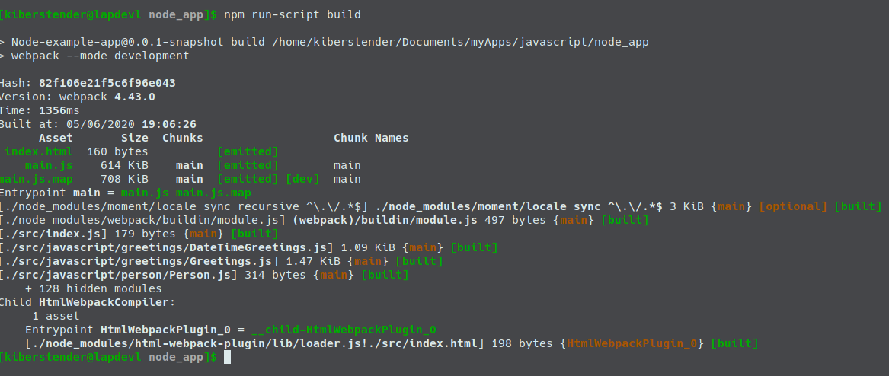
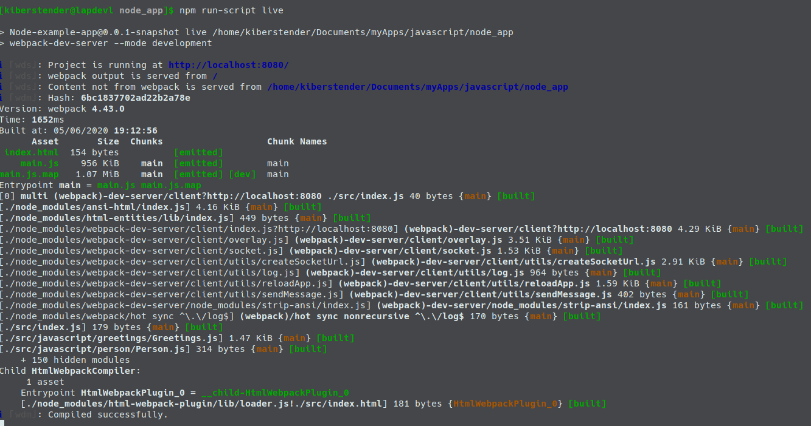
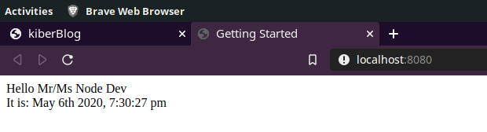
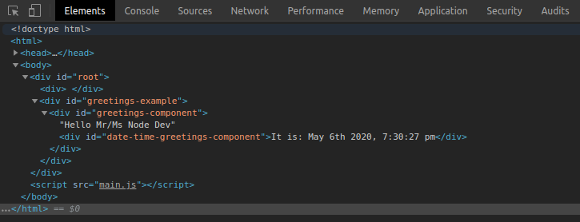
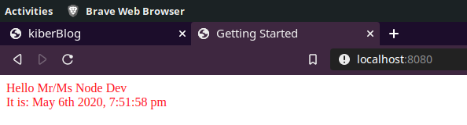
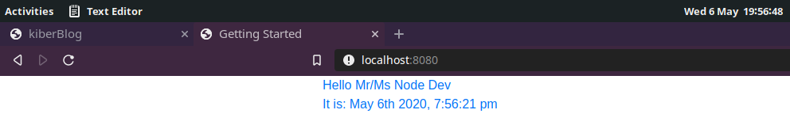
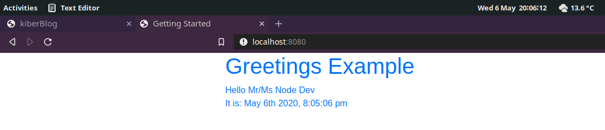
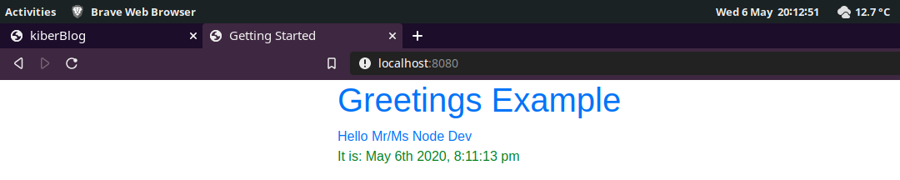
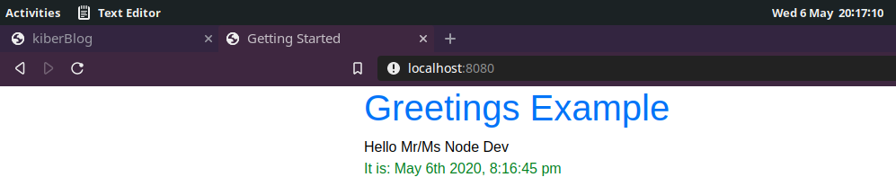

Introdução
A postagem anterior (Webpack- Uma introdução completa) introduziu o básico do Webpack, mas manteve tudo que fora feito para ser uma aplicação CLI(Command Line Interface/ Interface de linha de comando), enquanto que o Webpack é mais focado em aplicações frontend. Logo, nesta postagem irei mostrar- lhes o que é necessário para ao invés de imprimir no console, renderizar os dados em uma página HTML.
Irei continuar o desenvolvimento de um projeto Javascript estava trabalhando na postagem anterior, assim, se você não a leu, por favor considere fazê- lo antes de começar esta postagem ou se preferir, você pode clonar o projeto e fazer um checkout na branch da postagem:
git clone https://bitbucket.org/kiberStender/node_app.git cd node_app/ git checkout --track origin/webpack_introduction
Não irei explicar o que já fora explicado na outra postagem e irei assumir que você já está familiarizado com Javascript, NodeJs e o básico de Webpack.
HTML-Loader e HTMLWebpackPlugin
Bem, tudo que fora feito na postagem anterior é legal e bacana mas, a idéia deste tutorial é criar um frontend e não uma aplicação CLI. Para fazer isso, temos que lidar com arquivos HTML. Mas.... o que há para se lidar: HTML é uma "linguagem*" tão simples, porque você teria que lidar com isso? Por agora, temos apenas um arquivo Javascript(main.js), mas conforme a aplicação cresce, as boas práticas nos pedem que dividamos em o máximo de partes que pudermos/precisarmos e por causa do Javascript ser uma linguagem interpretada, se você esquecer de incluir algum arquivo(<script src=".../caminho">), não urá notar até que seja muito tarde. Assim temos um modo automatizado de adicionar todos os arquivos Javascript e CSS, para que nunca os esqueçamos. Para conseguir isso, precisamos do HtmlWebpackPlugin. Para configurá- lo, primeiro o adicionamos via npm install ...:
npm install --save-dev html-webpack-plugin@4.2.0
PS: Para esta postagem funcionar mesmo anos após escrita, use as mesmas versões que estou a usar das bibliotecas.
Agora você deve adicionar a "importação" do HTMLWebpackPlugin em /webpack.config.js antes de module.exports = {...:
... const HtmlWebpackPlugin = require("html-webpack-plugin"); module.exports = { ...
PS: Sempre que ver esses três pontos ... significa: "mantenha o que vier antes disso". Ou se vier após o que estamos a adicionar/modificar, siginifica: "mantenha o que vier após esses pontos"
Agora configure na propriedade plugins e diga qual arquivo HTML quer operar:
... plugins: [ ... new HtmlWebpackPlugin({template: "./src/index.html"}), ... ] ...
PS: Você pode especificar mais de um arquivo HTML mas, lembre-se que o Webpack é mais indicado para SPA(Single Page Application/Aplicação de uma só pagina)
Se rodar isso, perceberá que tens 2(dois) problemas:
- Ainda não há um arquivo HTML
- Webpack irá reclamar que precisa de um loader para arquivos HTML
Então primeiro vamos resolver o HTML inexistente. Crie o arquivo HTML chamado index.html dentro de /src. Agora adicione o conteúdo:
<!doctype html> <html> <head> <title>Getting Started</title> </head> <body> <div id="root"><div> </body> </html>
Agora adicione o loader para arquivos HTML. Simplesmetne instale o html-loader:
npm install --save-dev html-loader@1.1.0
Você poderia executar agora, mas ainda não iria functionar, porque não configuramos o html-loader, então vamos fazê- lo:
... rules: [ ... { test: /\.(html|htm)$/, use: { loader: "html-loader" } }, ... ] ...
Se você executar agora, isso é que é esperado que você veja:
Se prestar atenção ao nosso arquivo HTML, não existe uma tag <script> nele, mas se abrir o arquivo /dist/index.html poderá ver que há um <script type="text/javascript" src="main.js"></script> que inclui nosso main.js. O loader não está ali somente para ajudar nosso plugin funcionar, mas pode configurar o HTML para remover todos os espaços em branco e comentários, tornando- o mais leve para transferência. Simplesmente adicione a seguinte configuração na propriedade options:
... { test: /\.(html|htm)$/, use: { loader: 'html-loader', options: { // Desabilita processamento de tags e attributos minimize: true } } } ...
Hot-Reload(Atualização quente) ou Live-Reload(Atualização ao vivo)
Webpack é feito para ajudá- lo a criar frontend com páginas estáticas. Iso significa que, nenhum servidor(JSF, PHP, etc) irá pré processar suas páginas HTML antes de enviar para o usuário. Todo processamento para mudar dados na tela é feito pelo seus arquivos Javascript e CSS locais no navegador do usuário, assim diminuindo o número de requisições ao backend. Mas para testar sua aplicação no navegador, você tem que a cada vez que mudar algo, ir ao navegador e manualmente apertar CTRL + F5. Se você possui dois monitores e mantém o código aberto em um e o navegador em outro, é muito chato ter que trocar de monitor toda hora para atualizar a página e ver se o que você fez está correto. Hot-Reload ou Live-Reload é um recurso que ajuda você detectando todas as mudanças feitas em seu código e automaticamente atualiza sua aplicação em execução. Primeiro instale webpack-dev-server:
npm install --save-dev webpack-dev-server@3.10.3
Isso é um servidor simples que executa sua aplicação em Hot/Live-reload, assim toda vez que você salvar um arquivo, Webpack irá detectar se há alguma mudança e se houver, recompilar aquele arquivo para você sem parar a aplicação intenria por causa de uma mudançca. PS: Hot/Live-Reload é apenas para proprósitos de desenvolvimento, NÃO USE EM PRODUÇÃO. Ele é lento e não uglifica seu código tornando fácil para pessoas não autorizadas lê- lo ou depurá- lo.
Vamos criar nosso comando hot-reload. Abra seu arquivo package.json e em scripts adicione estas linhas:
... "scripts": { ... "live": "webpack-dev-server --mode development", "live:prod": "webpack-dev-server --mode production", ... } ...
E é isso aí, nenhuma outra configuração é necessária. Execute e irá ver isso:
Vá para http://localhost:8080 e veja sua página aberta com um simples título: Getting started e o resto da página em branco. Vamos colocar alguma ação nisso. Mude o conteúdo de seu arquivo /src/index.js para:
... function buildGreetElement(){ const greetElement = document.createElement("div"); const person = new Person("Node", "Dev"); let greetings = new Greetings(person); greetElement.innerHTML = greetings.greet(); return greetElement; } function component() { const mainDiv = document.createElement("div"); mainDiv.appendChild(buildGreetElement()); return mainDiv; } document.querySelector("#root").appendChild(component());
Sem parar a aplicação, verifique seu terminal após salvar /src/index.js e verá que o Webpack recompilou/retranspilou os arquivos alterados(neste caso apenas /src/index.js), agora vá para seu navegador e sem apertar nenhum botão a página em branco irá te mostrar a seguinte imagem:
Você pode ver que o \n não pula uma linha aqui certo? Então vamos tornar isso mais frontend. Primeiro abra /src/javascript/greetings/DateTimeGreetings,js e faça o retornar um elemento HTML, assim mudando a função greetDateTime para:
... greetDateTime(dateFormat){ const mainDiv = document.createElement("div"); mainDiv.setAttribute("id", "date-time-greetings-component"); //São: ${moment().format(dateFormat)} mainDiv.append(`It is: ${moment().format(dateFormat)}`); return mainDiv; } ...
Agora abra /src/javascript/greetings/DateTimeGreetings,js e faça o mesmo com a função greet:
... greet(){ const mainDiv = document.createElement("div"); //A div principal que irá armazenar tudo mainDiv.setAttribute("id", "greetings-component"); const {name, surname} = this.person; mainDiv.append(`Hello Mr/Ms ${name} ${surname}`); // Adicionando o greet que será mostrado // greetDateTime retorna um elemento HTML mainDiv.appendChild(this.dateTimeGreeter.greetDateTime("MMMM Do YYYY, h:mm:ss a")); return mainDiv; } ...
Agora abra /src/index.js e mude uma última vez:
import Person from "person/Person"; import Greetings from "greetings/Greetings"; function component() { const mainDiv = document.createElement("div"); mainDiv.setAttribute("id", "greetings-example"); const person = new Person("Node", "Dev"); let greetings = new Greetings(person); mainDiv.appendChild(greetings.greet()); return mainDiv; } document.querySelector("#root").appendChild(component());
Agora deve estar mais ou menos assim:
E o código HTML no navegador:
Arquivos com Hash no nome
Uma vez que a aplicação se tornou oficialmente uma aplicação Frontend, pode haver um problema que fora começado a ser removido quando fora adicionado o clean-webpack-plugin. Mas, naquela época, cache era um problema no nível do desenvolvimento e como eu mencionei, ele é ótimo de se ter no nível de produção, porque ele acelera a aplicação. Navegadores modernos quando detectam pelo nome de um arquivo que este já fora baixado, eles nao precisam fazer o download novamente caso a página seja atualizada, assim diminuindo a quantidade de banda utilizada para carregar a página e tornar a renderização mais rápida.
Isso é maravilhoso uma vez que a página está em produção, mas quando em desenvolvimento, isso pode criar caches velhos irritantes que não atualizam a página. Para impedir isso você pode usar nomes com hash fornecidos pelo Webpack "de graça". Webpack irá hashear(Gerar um código único baseado no conteúdo de seus arquivos) todo os arquivos em nível de build e gerar uma string hash, assim toda vez que recompilar um arquivo, se houverem diferenças, o valor deste hash será diferente e os navegadores não irão usar o cache nunca em algo que mudou o nome. Para fazer isso é muito simples, basta adicionar [hash] em qualquer parte do nome arquivo de saída em webpack.config.js:
... output: { filename: "main.[hash].js", path: ... }, ...
Agora, colocando tudo junto: O clean plugin irá sempre deletar o conteúdo de /dist, hashing irá sempre gerar um nome novo para seus arquivos conforme você os altera, assim o loader de HTML sempre irá incluí- los em sua página para você, assim você não irá esquecer nenhum arquivo Javascript. Agora você pode apenas focar em programar seu código sem medo de ter coisas velhas em seu cache ou problemas porque algum arquivo novo não fora adicionado à sua página. Isto é o que você verá após executar npm run-script build ou npm run-script build:prod:
Mas e o CSS?
Assim como o Javascript possui muitos transpiladores (Typescript, Coffescript, o próprio Javascript em versões diferentes) em CSS existem 2(dois) transpiladores principais(chamaods Pré-processadores): LESS e SASS. Neste tutorial irei usar SASS, porque irei usar Boostrap e este é feito usando SASS, logo ao usar ambos juntos, você pode usar as funções pré-definidas do Boostrap e outras coisas específicas do SASS. Se você, por algun motivo não quiser usar SASS, mas ainda quer usar Boostrap, não se preocupe, ainda é possíevel, mas você terá que compilar o Bootstrap para CSS e então usá- lo em seus arquivos de LESS ou CSS puro sem nenhum problema. Então vamos começar a configurar o SASS instalando todas as dependências:
npm install --save-dev sass@1.26.5 sass-loader@8.0.2 style-loader@1.2.0 css-loader@3.5.3
Agora vá para /webpack.config.js e adicione a nova regra na propriedade module, como fora feito com o Babel e o HTML-Loader:
... { test: /\.s[ac]ss|css$/i, use: ["style-loader", "css-loader", "sass-loader"] } ...
Agora crie um diretório chamado styles dentro de /src para armazenar os arquivos SASS e adicioná- los ao resolvedor de caminho(path resolution) no arquivo de configuração do Webpack:
... resolve: { modules: [path.resolve(__dirname, "src/javascript"), path.resolve(__dirname, "src/styles"), "node_modules"] } ...
Agora faça o mesmo em /jest.config.js:
module.exports = { "moduleDirectories":["src/javascript", "src/styles", "node_modules"] }
PS: Como node_modules tende a ser um diretório gigante para se fazer buscas, eu prefiro deixá- lo como o último no array de módulos, assim Webpack/Jest sempre irão procurar nos outros módulos antes de qualquer coisa, mas, eu tenho que dizer aqui que não tenho 100% de certeza que a ordem da declaração é obedecida.
E isso é tudo o que é necessário para ter SASS no projeto. Uma pequena menção aqui para a propriedade test ondeo valor é este: s[ac]ss. Isso ocorre devido ao SASS ter 2(dois) formatos principais de arquivo: .sass e .scss. Ambos significam o mesmo, se você quer entender mais sobre isso leia aqui(em inglês). Um dia eu faço um tutorial focado em SASS e explico as diferenças nos formatos de arquivos. Agora para testar se tudo funcionou você pode criar um arquivo index.scss em seu diretório /src/styles e colocar o seguinte:
$a_color: red; //Uma variável #greetings-example { color: $a_color; //Usando a variável }
Vá para o arquivo /src/index.js e importe o arquivo /src/styles/index.scss:
... import Greetings from "greetings/Greetings"; import "index.scss"; ...
Sim, para arquivos CSS, SASS ou LESS, quando os importamos, não há necessidade de adicionar a palavra "from". Mantenha o resto do código como está. Se você não parou a aplicação, reinicie- a ou execute caso contrário.(npm run-script live). Se seu texto está vermelho, parabéns, você conseguiu adicionar o pré-processaador SASS em sua aplicação:
Bootstrap
Bootstrap é uma das bibliotecas de CSS mais famosas atualmente. É muito simples de se usar e tem uma enorme comunidade para se tirar dúvidas. Eu poderia usar qualquer biblioteca aqui, mas decidi usar esta por ser muito conhecida e fácil de adicionar. Para ter Bootstrap simplesmente instale as dependências:
npm install bootstrap@4.4.1 jquery@3.5.0
jQuery está aqui rque o Bootstrap precisa dele para funcionar, não irei usar JQuery para nada neste turtorial. Agora para testar se isso funcionou, adicione as seguintes modificações no arquivo /src/styles/index.scss:
@import '~bootstrap'; #greetings-example { @extend .container; @extend .text-primary; }
Olhe novamente para sua página(se você não parou a aplicação, caso contrário execute- a) e se a cor agora é azul, você conseguiu, você tem uma aplicação frontend totalmente funcional com Webpack, Babel, SASS e Boostrap.
Diferentes regras de CSS para cada classe
Uma simples regra de boas práticas aqui. A razão pelo qual eu coloquei um ID único para cada mainDiv dentro de cada classe do projeto, é para separar o escopo usando CSS. Logo usar o Webpack lhe permite criar um arquivo diferente para cada "componente" que se tenha no projeto tornando mais fácil criar um arquivo CSS(ou neste caso SASS) para cada classe para não se misturar as responsabilidades. Para demonstrar isso, irei criar um novo arquivo chamado /src/javascript/App.js que irá ser o ponto de entrada da aplicação deixando /src/index.js para apenas iniciar a aplicação e nada mais, assim como o método main em Java/C/C++.
import Person from "person/Person"; import Greetings from "greetings/Greetings"; import "app.scss"; export default class App { buildTitle(){ const h2Element = document.createElement("h1"); h2Element.append("Greetings Example"); return h2Element; } buildGreetings(){ const person = new Person("Node", "Dev"); return new Greetings(person); } build(){ const mainDiv = document.createElement("div"); mainDiv.setAttribute("id", "greetings-example"); mainDiv.appendChild(this.buildTitle()); mainDiv.appendChild(this.buildGreetings().greet()); return mainDiv; } }
Perceba que eu importei app.scss e não index.scss. Não irei criar um arquivo novo, irei renomear /src/styles/index.scss para /src/styles/app.scss e manter o resto:
mv src/styles/index.scss src/styles/app.scss
Agora edite /src/index.js:
import App from "App.js" document.querySelector("#root").appendChild(new App().build());
E assim é como deve estar agora:
Agora crie um diretório chamado greetings dentro /src/styles/ e crie um arquivo dentro disso(/src/styles/greetings/) chamado dateTimeGreetings.scss e adicione o seguinte conteúdo:
#date-time-greetings-component { color: green; }
Agora import- o dentro de /src/javascrit/greetings/DateTimeGreetings.js:
import moment from "moment"; import "greetings/dateTimeGreetings.scss"; ... ...
PS: Observe que por /src/styles ter sido adicionado no resolvedor de caminhos(path resolution) pode- se usar o mesmo estilo de url para importar CSS/SASS
Agora a página deve estar assim:
Agora crie um arquvivo greetings.scss dentro de /src/styles/greetings/ e adicione:
#greetings-component { color: black; }
Importe - o em /src/javascrit/greetings/Greetings.js:
... import Person from "person/Person"; import "greetings/greetings.scss"; ... ...
E este é o resultado final:
Mesmo que isso pareça bobo, isto é para mostrar como você pode ter seus arquivos completamente segregados um dos outros e o resultado final ser um código final limpo, sem acoplamento e não muito difícil de gerenciar por causa da ajuda do Webpack.
Serve
Quando explicava sobre Hot/Live-reload, menciono que vocẽ não deve nunca usá- lo em produção, porque ele não otimiza seu código tornando- o lento e também não uglifica permitindo outras pessoas facilmente ler e depurá- lo ou mesmo copiar o que você fez. Mas eu também disse que o Webpack é usado para fazer frontends estáticos, assim como alguém pode executar essa aplicação em produção? Alguns servidores como o servidor estático do Github irão simplesmente "servir" sua aplicação sem nenhuma configuração, vocẽ simplesmente copia tudo o que está em seu diretório dist e comita. Mas quando você não tem tal servidor e em que criar o seu prório, como fazer isso? Existe uma aplicação CLI chamada serve que faz isso para você. Para instalá- la execute o comando:
npm install --save-dev serve@11.3.0
Agora mude o script execute para:
... "scripts":{ ... "serve":"serve -s dist", "execute":"npm run-script build:prod && npm run-script serve", ... } ...
Caso você queira "servir", mas quer escolher se irá fazer o build no modo dev ou prod eu criei um comando simples serve e editei o comando execute para ser seu comando de deploy assim ele sempre irá buildar em modo de produção e "servir". dist em serve -s dist é o nome do diretório que você quer "servir", logo se você configurou seu Webpack para que os arquivos vão para outro lugar, por favor mude de acordo. E para executar:
npm run-script execute
E agora confira em http://localhost:5000. Diferente do Hot-Reload, toda mudança que fizer será completamente ignorada, porque está sendo "servido" estaticamente seu diretório dist. Mas claro que se você disparar o build de outro terminal, pois o serve bloqueia o terminal atual que você está a usar, e então apertar F5ou CTRL + F5 ou mesmo clicar no botão de atualizar suas mudanças serão mostradas, mas isto, claro, mata todo o propósito de "servir" a aoplicação estaticamente já que esta é sua aplicação em produção.
Problema com tamanho
Agora que a aplicação é um frontend ao invés de uma CLI, para que ela tenha sucesso, ela deve ter boa performance. Isso significa que, após o usuário digitar a url em seu navegador, a aplicação deve carregar rápido. Um problema que ela tem neste momento é seu tamanho: ela pesa mais de 400 KiB:
Webpack recomendar que o tamanho máximo seja de 244KiB. Isso dito, o que pode ser feito? Primeiro, encontrar o que causa este tamanho imenso. Neste caso, o problema é o MomentJS. Ele está a ser carregado por inteiro e a aplicação usa apenas uma pequena parte. Como resolver? MomentJS possui um plugin chamado moment-locales-webpack-plugin, que ajuda a remover locales não necessário da aplicação: Instale- o:
npm install --save-dev moment-locales-webpack-plugin@1.2.0
Agora, configure o no arquivo /webpack.config.js:
... const MomentLocalesPlugin = require('moment-locales-webpack-plugin'); ...
Na sessão plugin, ainda em /webpack.config.js, instancie o novo plugin:
... plugins:[ ..., new MomentLocalesPlugin(), ... ] ...
Por padrão, se alguém usar new MomentLocalesPlugin(), o plugin irá entender que somente o locale en deve ser mantido, mas se se você quiser adicionar outro locale basta passar um objeto para o construtor:
... new MomentLocalesPlugin({localesToKeep: ['ru']}), //Russian Locale ...
Desta forma o plugin irá manter os dois locales en e ru. Execute o comando build:prod e veja a aplicação pesar menos de 244 KiB:
Separação de ambientes
Quando se faz uma aplicação profissional, geralmente, você tem que separar o que você usar em desenvolvimento e o que você usa em produção, para não ter por exemplo dados errados em produção or deixar a aplicação iniciar lentamente em desenvolvimento, porque você quis usar todas as otimizações que vocẽ usa em produção. Por isso e outros pequenos problemas se faz necessário separar as opões para a configuração da aplicação.
Como eu provavelmente já mencionei mais de 3(três) vezes nesta série de postagens, Webpack possui suporte para isso, ambos os controles automático e manuais sobre os ambientes. Como nossa aplicação é muito simples e pequena irei usar dois casos de uso muito simples:
dev-tool: No início eu configurei uma properiedade no arquivowebpack.config.jschamadadevtoolcomo o valorsource-map. Isso é muito legal para ajudar o navegador a saber mais sobre sua aplicação já que ele a carrega e iterpreta, assim ele pode aplicar algumas otimizações a mais em "nível de hardware". Mas o source-map, é um meta dado muito detalhado sobre suas funções, classes, módulos, etc, assim quanto maior sua base de código é, maior o tempo para gerar o source-map. Não que irá levar 1 hora, mas quando você está a desenvolver algo novo ou corrigir um erro, qualquer segundo extra que a aplicação leva para iniciar a executar para vocẽ ver se corrigiu ou nao é irritante. E se você pudesse desligar o source-map em modo de desenvolvimento e deixá- lo apenas para quando colocar a aplicação em produção?html-loader: Quando eu estava a mostrar nesta postagem que ohtml-loaderpode diminuir o tamanho do arquivo HTML ao remover espaços em branco e comentário isso era muito legal, mas em desenvolvimento ás vezes ter esses comentários e identação pode ajudar a ler o código e poderia ser melhor se só tivesse essa melhoria em produção.
Para fazer isso existem pelo menos 3(três) possibilidades e irei explicar mais afundo apenas 1, mas vale a pena saber todas:
- Ter mais de um
webpack.config.file: Você pode ter quantos você quiser e cada um pode ser específico de um ambiente. Para selecionar qual usar você só precisa passar nos comandosscriptsem package.json. Por exemplo, há 2(dois) commandos de build(buildebuild:prod), e se houvessem 2(dois) arquivos de configuração do Webpack como:webpack.dev.config.jsewebpack.prod.config.js, haveria a possibilidade de mudar osscriptspara:... "build":"webpack --config webpack.dev.config.js", "build:prod":"webpack --config webpack.prod.config.js" ...
Então nos respectivos arquivo de configuração do Webpack pode- se configurar uma propriedade chamadamodepara oudevelopmentorenvironment, assim sempre que os comandos de build forem executados, não serão mostrados os aviso de fallback de ambiente. - Croos-env library: Quando rodar a aplicação em Sistemas Operacionais diferentes, a forma que a variável de ambiente é passada na linha de comando pode mudar e isso pode ser um problema. Então instalar essa biblioteca pode te ajudar já resolver que ela pode resolver as diferenças para você e você pode escrever apenas uma vez o comando em
scriptsno package.json e passar os valores sem incompatibilidade. Assim você pode passar uma variável de ambiente para ajudar o Webpack para Produção ou Desenvolvimento e mudar a propriedademodee usar expressões ternárias para passar valores as propriedades dentro dewebpack.config.file. - Mudar
webpack.config.filede um objeto literal para uma função que retorna um objeto literal: Esta função possui dois parâmetros e o segundo tem o valor mode colocado no comandobuildno arquivo package.json: O--mode developmentou--mode production. Desta forma pode-se também usar uma expressão ternária para declarar os valores das propriedades no arquivowebpack.config.js.
O mais fácil para mim(não o melhor) é a terceria forma. Porque não exige criar arquivos adicionais, nem mudar o apckage.json nem mesmo adicionar nenhum biblioteca. Novamente, é o mais fácil, não o melhor.
Original:
...
module.exports = {
entry:...,
output:...,
devtool:...,
plugins:...,
module:...,
resolve:...
};
O que tem de ser feito:
... module.exports = function(nv, options) { const isProd = options.mode === "production"; return { entry:..., output:..., devtool:..., plugins:..., module:..., resolve:... }; }
Agora pode- se usar uma expressão ternária para declarar dinamicamente valores de acordo com o ambiente em qualquer propriedade desejada, como por exemplo, mudar o dev-tool:
... devtool: isProd ? "source-map" : "eval", ...
E em html-loader:
{ test: /\.(html|htm)$/, use: { loader: 'html-loader', options: { minimize: isProd } } }
Agora execute npm run-script build e verifique /dist. Você irá perceber que não há um arquivo map mais e se checar index.html ele terá todos os espaços e identação.
Servir no Backend
Se você usa algum framework de backend como Spring, você pode simplesmente compilar/transpilar tudo para /src/main/resources/static ou se usar Play Framework compilar/transpilar para /public quando em modo de produção. Ou para ser mais genérico, compilar/transpilar tudo de /dist para o diretório dedicado para arquivos estáticos do moto/framework de backend quando estiver em modo de produção.
Imagine que você possui um diretório chamado webapp na raís de sua apolicação Spring e tudo que fora feito nesta postagem está dentro de /webapp, assim webpack.config.js não está na raíz, você terá que ajustar a saída:
... output: { filename: "main.[hash].js", path: path.resolve(__dirname, isProd ? "../src/main/resources/static" : "dist") }, ...
Para o Playframerwork é a mesma coisa, há de se voltar um nível(se você estiver usando a estrutura do webapp) e colocar tudo no diretório /ublic:
... output: { filename: "main.[hash].js", path: path.resolve(__dirname, isProd ? "../public: : "dist") }, ...
Se esta é sua realidade, ignore a instação do serve e mude onde output.path em webpack.config.js coloca o conteúdo após npm run-script build:prod.
Testando seu frontend
E cá estamos novamente, a mudar os testes para refletirem o código novo. Se você tentar executà- los aogra irá ver que estão quebrados porque o Jest não consegue reconhecer a síntaxe do SASS quando importa- se os arquivos .scss:
Para resolver isso é necessário dizer ao Jest que para qualquer arquvo não-Javascript importado, que ele mude o código para um objeto vazio({}). Assim será criado um arquivo stub para todos os arquivos CSS/SASS/LESS que forem importados no código. Vá para /test e crie um novo diretório chamado jest_stub, agora dentro deste novo diretório crie um arquivo de nome CssStub.js e coloque o seguinte conteúdo:
module.exports = {};
Agora abra /jest.config.js e adicione uma nova propriedade chamda moduleNameMapper com o seguinte valor:
module.exports = { "moduleDirectories": ..., "moduleNameMapper": { "^.+\\.(css|scss|less)$": "<rootDir>/test/jest_stub/CssStub.js", } }
Agora se você exectuar os testes novamente o problema do import não mais existirá e agora há problemas porque a suite de testes estava a esperar que as classes retornassem Strings mas elas estão a retornar objetos HTML Node agora:
Para resolver isso é necessário usar o método innerHTML da clase HTML Node n função expected. vamos corrigir /test/javascript/greetings/DateTimeGreetings.test.js já que esta é a suite de teste mais fácil:
... test('should return "It is: 30-04-2020"', function() { ... //THEN expect(actual.innerHTML).toBe(expected); }); test('should return "It is: 04-30-2020_10:20:00"', function() { ... //THEN expect(actual.innerHTML).toBe(expected); }); ...
Agora /test/javascript/greetings/Greetings.test.js será corrigido. Como esta suite possui precisa de um mock para a classe DateTimeGreetings, ela não pode forçar a retornar uma String. Mesmo eu dizendo que quando mockarmos podemos forçar a classe a retornar qualquer valor que quisermos, não se deve mudar o tipo original da função que se está a mockar. Isso é porque, por exemplo, mainDiv.appendChild não aceita uma String como parâmetro, logo deve- se criar uma instância de HTML Node para usar em sinon.mock(...)returns:
... const dateTimeGreetNode = document.createElement("div"); dateTimeGreetNode.setAttribute("id", "date-time-greetings-component"); dateTimeGreetNode.innerHTML = "It is: April 30rd 2020, 10:20:00 pm"; beforeEach(function(){ sinon .mock(DateTimeGreetings.prototype) .expects("greetDateTime") .withExactArgs("MMMM Do YYYY, h:mm:ss a") .returns(dateTimeGreetNode); }); ... test(`should return "Hello Mr/Ms NodeJS Dev\\nSão: April 30rd 2020, 10:20:00 pm"`, function() { //GIVEN const expected = `<div>Hello Mr/Ms NodeJS Dev</div><div id="date-time-greetings-component">São: April 30rd 2020, 10:20:00 pm</div>`; //WHEN const actual = greetDev.greet(); //THEN expect(actual.innerHTML).toBe(expected); }); test(`should not return "Hello Mr/Ms NodeJS Dev \\nSão: April 30rd 2020, 10:20:00 pm"`, function() { //GIVEN const expected = `<div>Hello Mr/Ms NodeJS Dev </div><div id="date-time-greetings-component">Sâo: April 30rd 2020, 10:20:00 pm</div>`; //WHEN const actual = greetDev.greet(); //THEN expect(actual.innerHTML).not.toBe(expected); }); ...
Agora crie um teste para a nova classe /src/javascript/App.js em /test/javascript/App.test.js. Este teste irá mockar a classe Greetings:
import sinon from "sinon"; import Greetings from "greetings/Greetings"; import App from "App" const app = new App(); describe("App", function() { const dateTimeGreetNode = document.createElement("div"); dateTimeGreetNode.setAttribute("id", "date-time-greetings-component"); dateTimeGreetNode.append("It is: April 30rd 2020, 10:20:00 pm"); const greetingsNode = document.createElement("div"); greetingsNode.setAttribute("id", "greetings-component"); greetingsNode.append("Hello Mr/Ms NodeJS Dev"); greetingsNode.appendChild(dateTimeGreetNode); beforeEach(function(){ sinon .mock(Greetings.prototype) .expects("greet") .returns(greetingsNode); }); afterEach(function(){ sinon.restore(); }); describe('#build()', function() { test(`should return "Greetings Example\\nGreetings Hello Mr/Ms NodeJS Dev\\nIt is: April 30rd 2020, 10:20:00 pm"`, function() { //GIVEN const expected = `<h1>Greetings Example</h1><div id=\"greetings-component\">Hello Mr/Ms NodeJS Dev<div id=\"date-time-greetings-component\">It is: April 30rd 2020, 10:20:00 pm</div></div>`; //WHEN const actual = app.build(); //THEN expect(actual.innerHTML).toBe(expected); }); test(`should not return "Greetings Example\\nHello Mr/Ms NodeJS Dev \\nIt is: April 30rd 2020, 10:20:00 pm"`, function() { //GIVEN const expected = `<h1>Greetings Example</h1><div id=\"greetings-component\">Hello Mr/Ms NodeJS Dev <div id=\"date-time-greetings-component\">It is: April 30rd 2020, 10:20:00 pm</div></div>`; //WHEN const actual = app.build(); //THEN expect(actual.innerHTML).not.toBe(expected); }); }); });
Está feito, os testes estão corrigidos agora e se você rodá- los, eles deverão passar. Mas ainda há algo faltando.... Alguma coisa para mostrar que realmente está certo. Um teste de iintegração se faz necessário para ver se o HTML no navegador é realmente modificado para o que esperamos que seja modificado. Como por agora é apenas verificado o que as funções retornam mas isso não necessariamente significa que irá funcionar em um navegador real. Então como verificar isso? Jest vem com uma biblioteca chamada JSDom. Esta biblioteca cria um navegador falso, assim pode- se usar isso nos testes para verificar se um botão foi clicar, se este clique no botão mudou algo que era esperado mudar, se mudou corretamente, e assim por diante.
Então vamos criar o nosso primeiro Teste de Integração. Iremos somente forçar a data por causa do problema com data e tempo serem constantes e deixaremos o resto acontecer automaticamente sem mockar nada e verificar e nossa div de ID root mudou de acordo. Primeiro criaremos o arquivo /test/javascript/AppIntegration.test.js e adicionar o seguinte conteúdo:
import sinon from "sinon"; describe("AppIntegrationTest", function() { const clock = date => sinon.useFakeTimers(Date.parse(date)); const mockdate = "30 Apr 2020 10:20:00" beforeEach(function(){ clock(mockdate); }); afterEach(function() { clock(mockdate).restore(); }); test("Check integration of all parts", function(){ //GIVEN document.body.innerHTML = `<!doctype html><html><body><div id="root"></div></body></html>`; const expected = `<div id="greetings-example"><h1>Greetings Example</h1><div id="greetings-component">Hello Mr/Ms Node Dev<div id="date-time-greetings-component">It is: April 30th 2020, 10:20:00 am</div></div></div>`; //WHEN require("../../src/index.js"); //THEN expect(document.querySelector("#root").innerHTML).toBe(expected); }); });
E voi là, um teste de integração funcionando. Como eu disse que nada fora mockado além da data e hora do nosso sistema, caso contrário, este teste falaharia mesmo antes da primeira execução já que a hora que seria colocada na constante expected seria diferente 1ms depois. Agora execute e veja o resultado:
* Jamais diga que HTML é uma linguagem em nenhuma entrevista. JAMAIS!
Conclusão
Nesta postagem aprendemos que o Webpack existe para aplicações de frontend estático. Adiciomos SASS, Bootstrap, hasheamos nossos arquivo Javascript para tirar vantagem do mecanismo de cache do navegador, aprendemos como controlar o ambiente, melhoramos nossos teste e adicionamos um novo Teste de integração. Se por algum acaso você precisar ou quiser ver o código todo desta postagem, clone este repositório and faça o checkout da branch chamada webpack_frotend. Sinta- se livre para acessar a versão original desta postagem em inglês inglês.